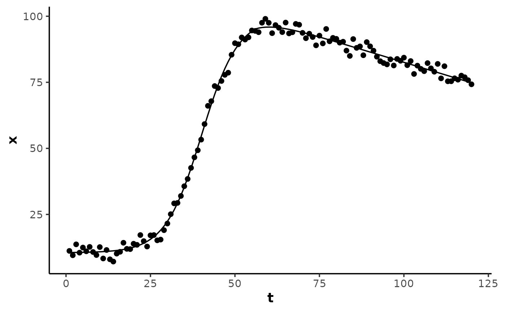

Calculate a two-phase curve: a fast sigmoidal primary response of the
given shape plus a slow linear secondary drift beginning near the
ending asymptote. Model family fit by analyse_kinetics() with
method = "sigmoidal_drift", and by stats::nls() via the self-starting
wrapper SSsigmoidal_drift().
Usage
sigmoidal_drift(
t,
A,
B,
xmid,
slope,
slope_B,
drift_fraction,
shape = c("symmetric", "gompertz", "gompertz_left")
)Arguments
- t
A numeric vector of the predictor variable (time).
- A
A numeric parameter for the starting asymptote of the response variable.
- B
A numeric parameter for the ending asymptote of the response variable.
- xmid
A numeric parameter for the time at the inflection point (the steepest point) of the curve, in units of the predictor variable
t.- slope
A numeric parameter for the response rate
dx/dtat the inflectionxmid.- slope_B
A numeric parameter for the linear drift rate
dx/dtof the secondary phase at the ending asymptoteB, in response units per unit of the predictor variablet.- drift_fraction
A numeric fraction of the primary amplitude
B - Ain(0.5, 1)at which the linear drift begins, where the sigmoid reachesA + drift_fraction * (B - A).- shape
Character; the 4-parameter sigmoidal shape. One of
"symmetric"(default;logistic()),"gompertz"(gompertz()), or"gompertz_left"(gompertz_left()).
Details
Model equation
S(t) + slope_B * pmax(t - onset, 0)
S(t) is the 4-parameter sigmoid of the given shape with asymptotes A
and B, inflection xmid, and inflection rate slope (see logistic()
and gompertz()). The drift is a hinge line anchored at zero at the onset,
so it is exactly zero up to the onset.
The drift onset is not a free estimate: it is the analytic inverse of each
shape at the drift_fraction fraction f of its amplitude,
onset = xmid + u / k:
shape = "symmetric":k = 4 * slope / (B - A);u = log(f / (1 - f)).shape = "gompertz":k = slope * e / (B - A);u = -log(-log(f)).shape = "gompertz_left":k = slope * e / (B - A);u = log(-log(1 - f)).
The "gompertz" form places its onset furthest past xmid (slow tail)
and "gompertz_left" nearest (fast tail).
The excursion point texc is where the drift rate overtakes the decaying
primary rate, |S'(t)| = |slope_B|, floored at the drift onset.
Examples
## create a sigmoidal curve with late linear drift and random noise
set.seed(13)
t <- 1:120
x <- sigmoidal_drift(
t, A = 10, B = 100, xmid = 40, slope = 4,
slope_B = -0.4, drift_fraction = 0.95
) + rnorm(length(t), 0, 2)
data <- data.frame(t, x)
## the drift onset fraction is held constant in the formula
model <- nls(
x ~ SSsigmoidal_drift(
t, A, B, xmid, slope, slope_B, drift_fraction = 0.95
),
data = data,
algorithm = "port",
control = nls.control(warnOnly = TRUE)
)
summary(model)
#>
#> Formula: x ~ SSsigmoidal_drift(t, A, B, xmid, slope, slope_B, drift_fraction = 0.95)
#>
#> Parameters:
#> Estimate Std. Error t value Pr(>|t|)
#> A 10.52640 0.42234 24.92 <2e-16 ***
#> B 99.63947 0.43413 229.52 <2e-16 ***
#> xmid 40.12853 0.15367 261.13 <2e-16 ***
#> slope 4.13185 0.08690 47.55 <2e-16 ***
#> slope_B -0.38786 0.01357 -28.59 <2e-16 ***
#> ---
#> Signif. codes: 0 ‘***’ 0.001 ‘**’ 0.01 ‘*’ 0.05 ‘.’ 0.1 ‘ ’ 1
#>
#> Residual standard error: 1.874 on 115 degrees of freedom
#>
#> Algorithm "port", convergence message: relative convergence (4)
#>
y <- predict(model, data)
# \donttest{
if (requireNamespace("ggplot2", quietly = TRUE)) {
ggplot2::ggplot(data, ggplot2::aes(t, x)) +
theme_mnirs() +
ggplot2::geom_point() +
ggplot2::geom_line(ggplot2::aes(y = y))
}

# }